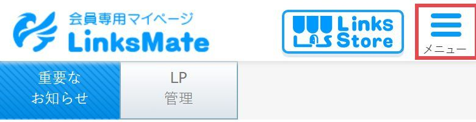
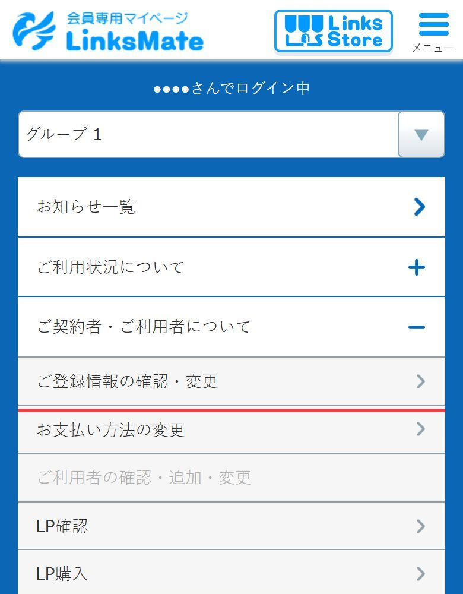
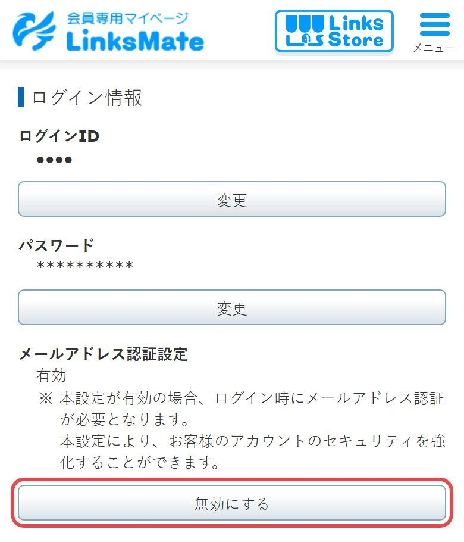
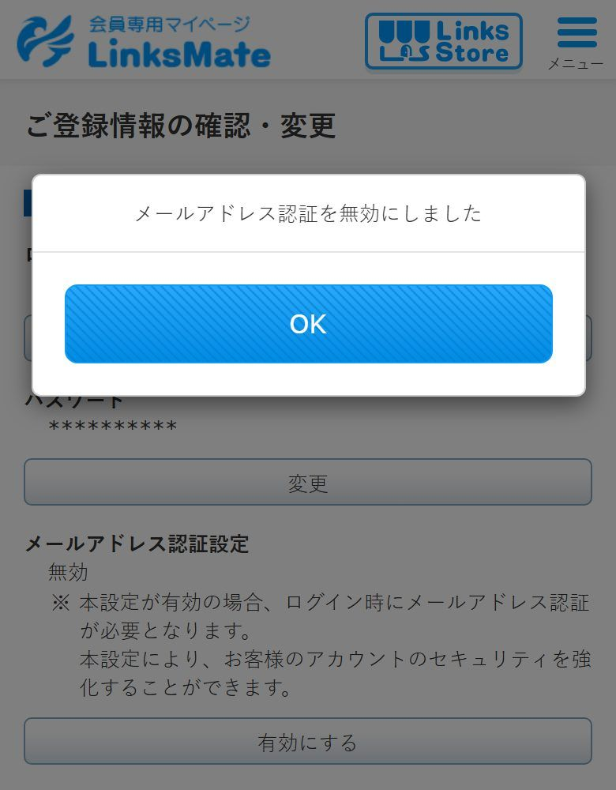
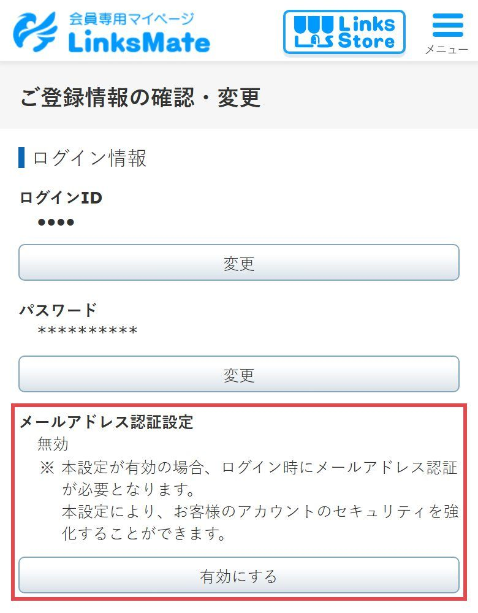

LINKSMATE の設定 ・ スマートフォンで 3 分
リンクスメイト（LinksMate）にログインするたびにメールで届く「認証コード」を、なくす設定です。 これにより、弊社でお手続きを進めるときに、コードをその都度お知らせいただく必要がなくなります。
Gmail などメールの設定は要りません。リンクスメイトのマイページでボタンを1つ押すだけです。
linksmate.jp/mypage/ を開き、いつものログインID（メールアドレス）とパスワードでログインします。
いつもどおりメールに認証コードが届くので、入れてください（これが最後の1回です）。
画面の右上の メニュー を押します。

メニューの中の ご契約者・ご利用者について を押して開き、すぐ下の ご登録情報の確認・変更 を押します。

「ログイン情報」の3つめ、メールアドレス認証設定の下にある 無効にする を押します。

「メールアドレス認証を無効にしました」と出たら OK。

メールアドレス認証設定が「無効」になり、ボタンが 有効にする に変わっていれば完了です。

リンクスメイトのログインID（メールアドレス）とパスワードを担当者にお伝えください。伝え方は担当者の案内に従ってください。
画面が変わった可能性があります。担当者までご連絡ください。代わりに、認証コードのメールを弊社へ転送する設定でもお手続きを進められます。
同じ「ご登録情報の確認・変更」で 有効にする を押すと、その場で元に戻ります。戻した場合は担当者までお知らせください（以降のお手続きでは、また認証コードが必要になるため）。
パソコンでも同じです。マイページのメニューから ご登録情報の確認・変更 を開き、手順 4 から行ってください。